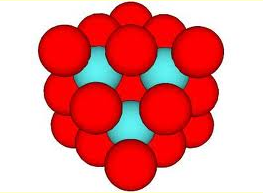
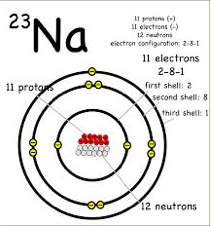
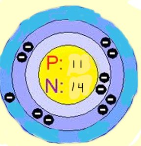

Sodium has 18-22 isotopes, because opinions differ. There are many isotopes, but only one of them is stable. Isotope-24 is used to study the electrolytes in the body.
  | Isotope | Half Life |
|---|---|
| Sodium-18 | 1.3*10-21 |
| Sodium-19 | <40 nanoseconds |
| Sodium-20 | 447.9 milliseconds |
| Sodium-21 | 22.49 seconds |
| Sodium-22 | 2.6027 years |
| Sodium-23 | stable |
| Sodium-24 | 14.997 hours |
| Sodium-25 | 59.1 seconds |
| Sodium-26 | 1.07128 seconds |
| Sodium-27 | 301 milliseconds |
| Sodium-28 | 30.5 milliseconds |
| Sodium-29 | 44.9 milliseconds |
| Sodium-30 | 48 milliseconds |
| Sodium-31 | 17 milliseconds |
| Sodium-32 | 13.2 milliseconds |
| Sodium-33 | 8 milliseconds |
| Sodium-34 | 5.5 milliseconds |
| Sodium-35 | 1.5 milliseconds |
| Sodium-36 | <180 nanoseconds |
| Sodium-37 | >60 nanoseconds |